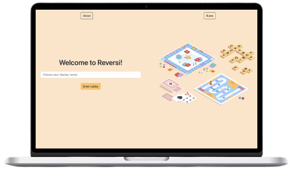
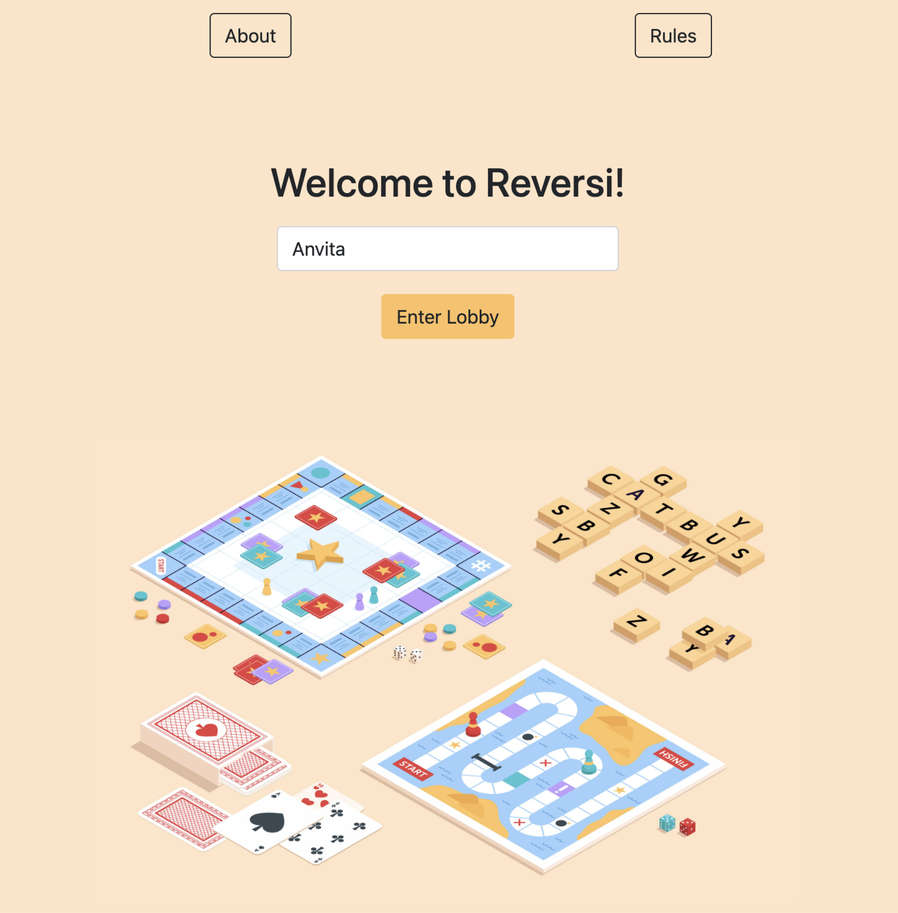
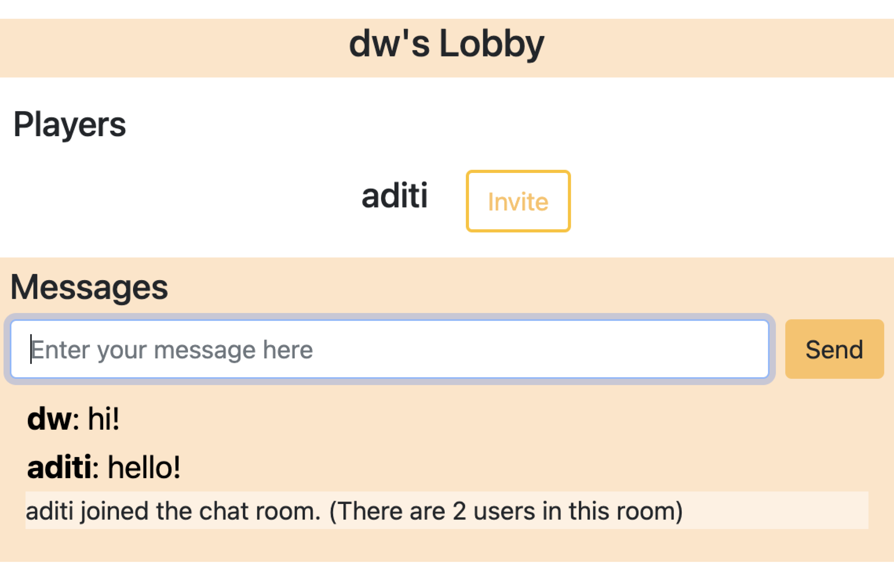
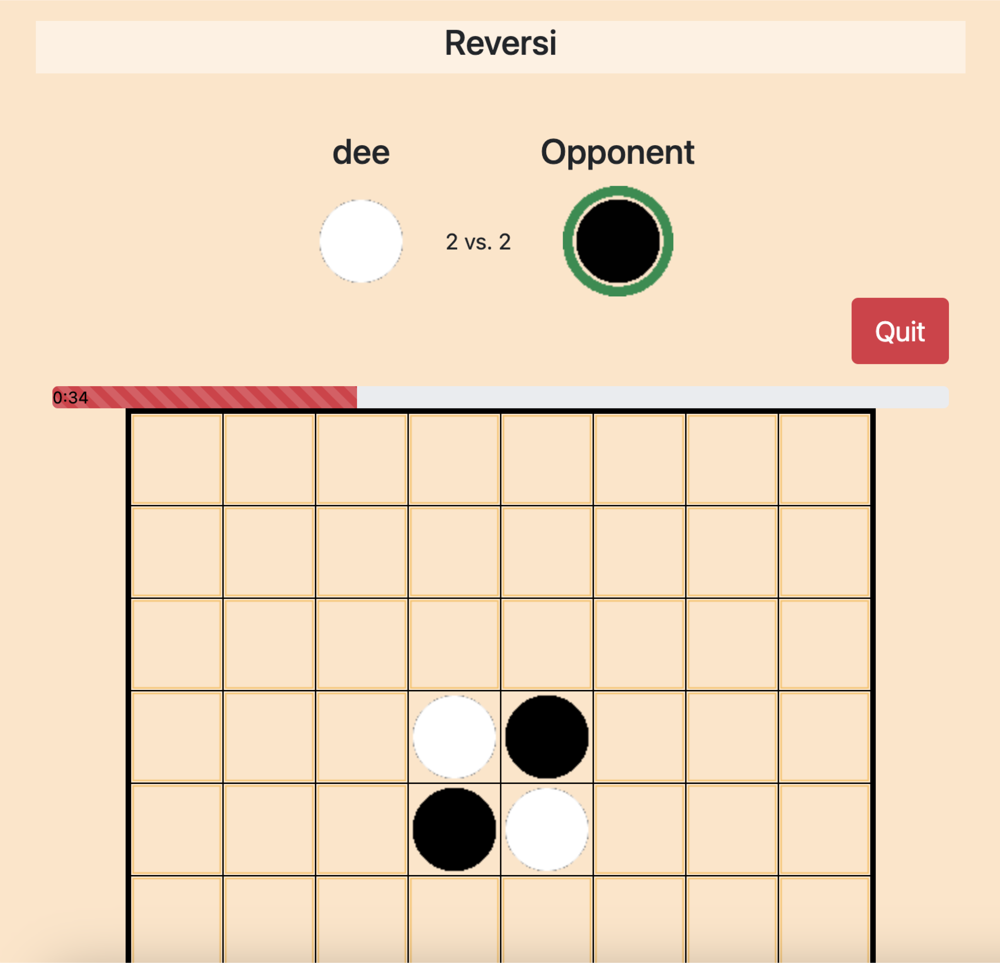

Reversi
A recreation of Reversi (Othello) on the web
My Role(s)
Full-Stack Developer
Introduction
Reversi is a board game played by two players on an 8x8 board. Each player is assigned a different colored token and they take turns by
placing their token on the board. During a play, if any of the opponent's tokens are in a straight line and bounded by the current
player's tokens on either end, then the tokens in that line switch to the current player's token color. Whoever has the most tokens on
the board when the last playable square is filled wins.
There are three main aspects of the website: The home page, the lobby, and the game itself. The home page is where users enter their
username and join a lobby. The lobby page is where users can chat with other members of the lobby in real time. They can invite people
from the lobby to start a game, and when they do, they're directed to the game page. This is where the main game occurs, and both players
take turns placing tokens on the board. This board updates in real-time for both users.
You can play my version of Reversi too! Use two separate tabs to play as different people, or share it with someone and play against them!
Overview of Files and Technologies Used
The following diagram shows the breakdown of the technologies used and the file system I had when coding this game. Overall, I used the standard HTML and CSS to provide the layout and general styling of the elements on the page. JavaScript was used to program the interactivity between these elements. I used Heroku to upload and run my application in the cloud.

Analysis
The Home Page
Users are directed to this page when they first visit the site.
| The Good | The Bad |
|---|---|
|
Rules are shown in the home page. Users can understand how to play the game before actually committing to it.
Clean aesthetic. Warm tones are inviting. |
Buttons look different on top (inconsistency). However, this could be a version of a secondary button. |
The Lobby
When users enter their name, they join the lobby. When multiple people join the lobby, they can chat and invite another player to start a game.
| The Good | The Bad |
|---|---|
| Good color contrast between the messages and the background. | Invite button is hard to read on the white background. Change it to a darker yellow or make the text black instead. |
The Game Page
When two players agree to play a game, the leave the lobby and join a game. When the user leaves the page, they join their lobby again.
| The Good | The Bad |
|---|---|
|
Only the legal moves show the hover state. This gives players a visual indication of what moves are allowed.
The green circle around the token shows the players whose turn it is. Another visual indicator other than text to reinforce turn-taking. Animated progress bar and timer show how much time has passed. It provides users with the text and visual information needed to make a move. |
Have a place on this page when players can access the rules. This way, users don't need to leave the entire game in order to know how to play.
Player doesn't switch when the timer runs out. The timer instills a state of urgency within the players during their turn. However, there are no consequences for the timer running out. Switching the player's turn automatically reinforces the need and purpose of the timer. Bad contrast between the timer and the progress bar. Change the text to white for better readability. Need smoother graphics. Smoother graphics make the site look cleaner and well put-together. Using higher resolution gifs can give this effect. Other than the visual progress bar of the timer, there are no indications for when it's the player's turn. There could be some audio feedback or a visual indicator of when a player places their token and when the timer runs out. When the game is over, the timer still runs. Stop the timer when the game is over, and design the Game Over text to be more celebratory so that it's easier for users to identify the end of the game. The timer doesn't show until the progress bar loads over it. Either put it above the progress bar or show it consistently within the progress bar. If two users want to play another game, they have to enter the lobby and invite each other to play. Adding a "New Game" functionality within the game page will expidite this process. The opponent's username doesn't show in the game. The opponent's username can show over their respective token for added clarity. |
Reflection
Overall, this is a good online version of the game, but there are many improvements that could be made to streamline the user experience. There are many instances where the color contrast of two elements can be increased for enhanced readability. I also had some trouble with the code when it came to the game board. I wanted to write down the opponent's name on each player's screen, but I couldn't figure out an easy way to do that. There's a few “loose ends” that I didn't tie, as seen through my analysis. Things like the issues with the timer or visual user feedback are things that I want to fix in the future.
Aditi Kisara